Multi-Table Queries, Foreign Keys, and JOINs
Lecture 3, Part 3 — Connecting Tables and Combining Data
Foreign Key Constraints
So far we have been working with individual tables in isolation. But real databases almost never consist of a single table. A university database has students, courses, enrollments, professors, and departments. An e-commerce database has customers, products, orders, and reviews. The power of relational databases comes from the ability to relate tables to each other, and foreign keys are the mechanism that makes these relationships reliable.
The Problem: Referential Integrity
Consider a university with two tables: Students(cuid, name, gpa) and Enrolled(student_id, cid, grade). The Enrolled table records which students are taking which courses. But what happens if someone inserts a row into Enrolled with a student_id of 99999, and no student with that ID exists in Students? We would have a phantom enrollment — a course registration belonging to nobody. This is called a referential integrity violation.

student_id in the Enrolled table is a foreign key referencing cuid in the Students table. This means: only bona fide students may enroll in courses.
Declaring Foreign Keys in SQL
Foreign keys are declared as part of the CREATE TABLE statement. The syntax explicitly names the column in the current table and the column it references in the other table:
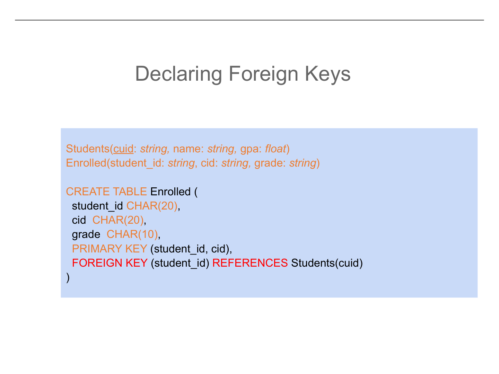
The Declaration
When creating the Enrolled table, we add a FOREIGN KEY clause:
CREATE TABLE Enrolled (student_id INT, cid VARCHAR(20), grade CHAR(2), FOREIGN KEY (student_id) REFERENCES Students(cuid))
This tells the database: "Before inserting any row into Enrolled, check that the value of student_id actually exists as a cuid in the Students table. If it does not, reject the insertion." The referenced column (cuid) must be a key — typically the primary key — of the referenced table.
What Happens When Data Changes?
Declaring a foreign key is straightforward for inserts: the database simply checks that the referenced value exists. But what about deletions and updates? If we delete a student from Students, what should happen to their rows in Enrolled? This is where things get interesting, because there are multiple reasonable policies.
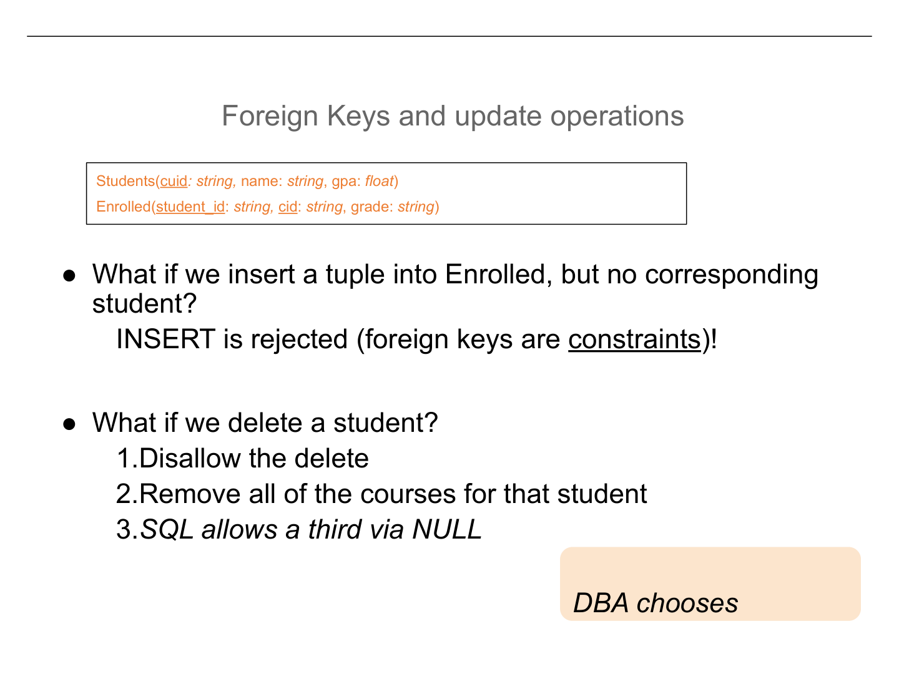
Insert Operations
If you try to insert a row into Enrolled with a student_id that does not exist in Students, the insert is simply rejected. The database returns an error. There is no ambiguity here.
Delete Operations: Three Strategies
When a student is deleted from Students, the database administrator (DBA) must choose one of three strategies for handling the orphaned rows in Enrolled:
- Disallow (RESTRICT): The delete is rejected entirely. You cannot remove a student who has enrollments. The DBA must first delete the enrollment records, then delete the student. This is the safest but most restrictive option.
- Cascade (CASCADE): The delete propagates automatically. When a student is deleted, all of their enrollment records are also deleted. This is convenient but potentially dangerous — you might accidentally wipe out important enrollment history.
- Set NULL (SET NULL): The
student_idin the orphanedEnrolledrows is set toNULL. The enrollment records survive but now belong to nobody. This preserves the data while acknowledging the student no longer exists.
The DBA chooses the appropriate policy based on the application's requirements. Each option has trade-offs between data safety, convenience, and information preservation.
Another Example: Companies and Products
Let us look at another pair of tables that will be used throughout the rest of this lecture. Consider Company(CName, country, noOfEmployees) and Product(PName, Price, Category, Manufacturer). Here, CName is the primary key of Company, and Manufacturer in Product is a foreign key referencing Company(CName). Every product must be manufactured by an existing company.
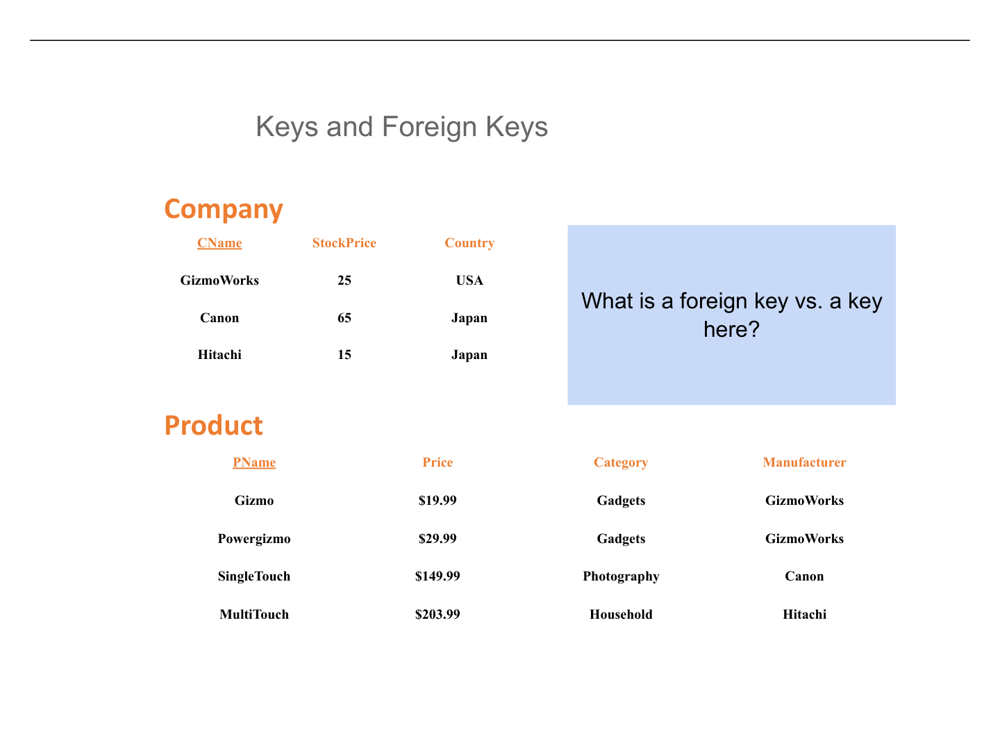
This relationship ensures data consistency: you cannot list a product as manufactured by "Phantom Corp" if no such company exists in the Company table. The database enforces this automatically, relieving the application code from having to do these checks manually.
The Real World: When Theory Meets Practice
Foreign keys are a cornerstone of relational database theory, and they are heavily used in traditional enterprise applications. However, not every system uses them. One prominent example is GitHub.

Why GitHub Does Not Use Foreign Keys
GitHub's engineering team made a deliberate decision to avoid foreign key constraints in their database. There are three main reasons:
- Sharding: At GitHub's scale, data is distributed across many database servers (shards). Foreign keys that reference rows on different shards are extremely expensive to enforce because every insert requires a cross-network check.
- Performance Impact: Every insert and update requires the database to verify the foreign key constraint. At high throughput (millions of operations per second), this overhead becomes significant.
- Schema Migrations: When you need to change the structure of a table (add columns, rename fields), foreign keys create dependencies between tables. This makes migrations slower and more complex, since you must account for all referencing tables.
Instead, GitHub enforces referential integrity in application code and through background validation jobs. This is a pragmatic engineering trade-off: they sacrifice some database-level safety guarantees for operational flexibility and performance.
JOINs: Combining Data Across Tables
Now that we understand how tables relate to each other through foreign keys, we face a practical question: how do we actually query data that spans multiple tables? If product information is in one table and company information is in another, how do we answer a question like "What products under $200 are made by Japanese companies?" This is the domain of joins.
The Design Trade-Off: Table Complexity vs. Query Complexity
Before we dive into join syntax, it is worth understanding why we need joins in the first place. Could we not just put everything in one giant table?
The "Franken-Table" Approach
Put all data in one table: Product(PName, Price, Category, Manufacturer, Country, NoOfEmployees). Queries are simple (no joins needed!), but you pay a heavy price: data is duplicated everywhere. If GizmoWorks has 2000 employees and makes 50 products, the number "2000" is stored 50 times. Updating the employee count means updating 50 rows. This leads to update anomalies and wasted storage.
The Normalized Approach
Separate data into logical tables: Product and Company. Each fact is stored once. Updating the employee count means changing one row. But now queries that need data from both tables require a join. You trade query simplicity for data integrity and storage efficiency.
What Is a Join?

Let us work through a concrete example. Suppose we want to find all products under $200 that are made by companies based in Japan. The data we need is split across two tables:
Product(PName, Price, Category, Manufacturer)— has product names and pricesCompany(CName, Country, NoOfEmployees)— has company countries
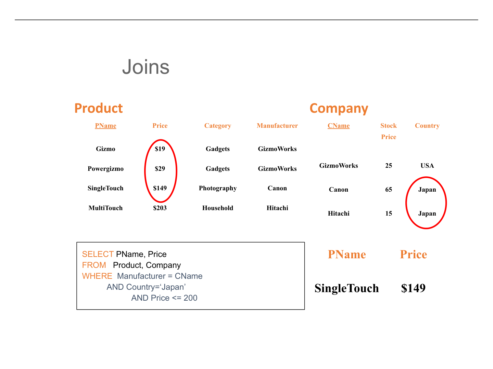
The SQL query to answer this question is:
The Multi-Table Query
SELECT PName, Price FROM Product, Company WHERE Manufacturer = CName AND Country = 'Japan' AND Price <= 200
Notice what is happening here. We list both tables in the FROM clause. The condition Manufacturer = CName is the join condition — it tells the database how rows in Product relate to rows in Company. The other conditions (Country = 'Japan' and Price <= 200) are selection filters that narrow down the results.
Cross Product Semantics: How Joins Work Logically
To understand what a multi-table query produces, think of it as a three-step process. This is the logical semantics — how to reason about the result, not how the database actually executes the query internally.

Conceptually, the database forms the cross product of all tables in the FROM clause. If Product has 4 rows and Company has 3 rows, the cross product has 4 × 3 = 12 rows. Each row is a combination of one Product tuple and one Company tuple. Most of these combinations are meaningless — for instance, pairing "Gizmo" with a company that does not manufacture it.
The WHERE clause filters the cross product, keeping only rows where all conditions are true. The join condition Manufacturer = CName eliminates the nonsensical pairings, keeping only rows where a product is paired with its actual manufacturer. The additional conditions further narrow the results to Japanese companies and prices under $200.
Finally, the SELECT clause determines which columns appear in the output. We asked for PName and Price, so only those two columns are returned, even though the intermediate result contained all columns from both tables.
Logical vs. Physical Execution
It is critical to understand that this three-step process describes the logical semantics of the query — what the result should be. It does not describe how the database actually executes it. No real database engine forms the entire cross product and then filters. Instead, the query optimizer finds efficient strategies (using indexes, hash joins, merge joins, etc.) that produce the same result without materializing the full cross product. We reason about correctness using the logical model but trust the optimizer for performance.
Aggregations: Summarizing Data
So far, every query we have written returns individual rows from the database. But many real-world questions ask for summaries: "What is the average price?", "How many students are enrolled?", "What is the total revenue?" These are aggregation queries, and SQL provides a set of built-in functions to answer them.

The Five Aggregation Functions
SUM(column)— adds up all values in the columnCOUNT(column)— counts the number of non-NULL values;COUNT(*)counts all rows including NULLsMIN(column)— returns the smallest valueMAX(column)— returns the largest valueAVG(column)— computes the arithmetic mean
Important: All aggregation functions ignore NULL values, with one exception: COUNT(*) counts all rows regardless of NULLs.
Simple Aggregation Examples
Consider the Product table with products from GizmoWorks. If we want the average price of GizmoWorks products:
Average Price Query
SELECT AVG(Price) FROM Product WHERE Manufacturer = 'GizmoWorks'
If GizmoWorks makes products priced at $10 and $20, the result is $15. The WHERE clause first filters to only GizmoWorks products, and then AVG computes the mean of the remaining prices.
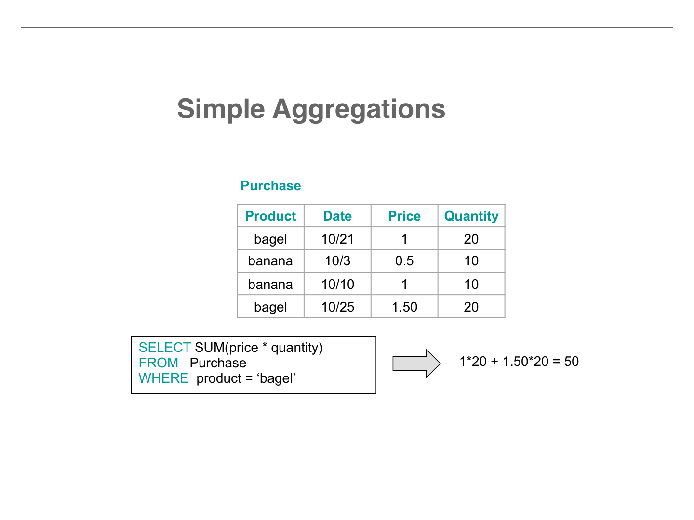
Now consider a Purchase table that records transactions. Suppose we want the total spending on bagels:
Total Spending on Bagels
SELECT SUM(price * quantity) FROM Purchase WHERE product = 'bagel'
Here the aggregation operates on an expression (price * quantity), not just a column name. SQL evaluates price * quantity for each qualifying row, then sums the results. If there are two bagel purchases — one for $1.50 × 20 = $30 and another for $2.00 × 10 = $20 — the total is $50.
GROUP BY: Aggregation by Category
Simple aggregations return a single number for the entire result set. But what if we want the average price for each manufacturer? Or the total sales for each product? This is where GROUP BY comes in. It partitions the result into groups and computes a separate aggregate for each group.
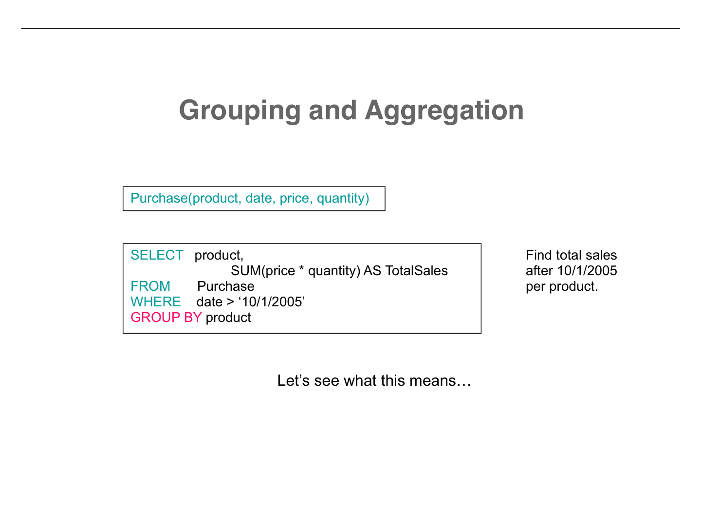
The semantics of a GROUP BY query follow a precise three-step process. Let us walk through it carefully.
First, evaluate the FROM clause (possibly with joins) and apply the WHERE clause to filter rows. This produces an intermediate result table. At this stage, nothing has been grouped yet — we simply have a flat table of qualifying rows.
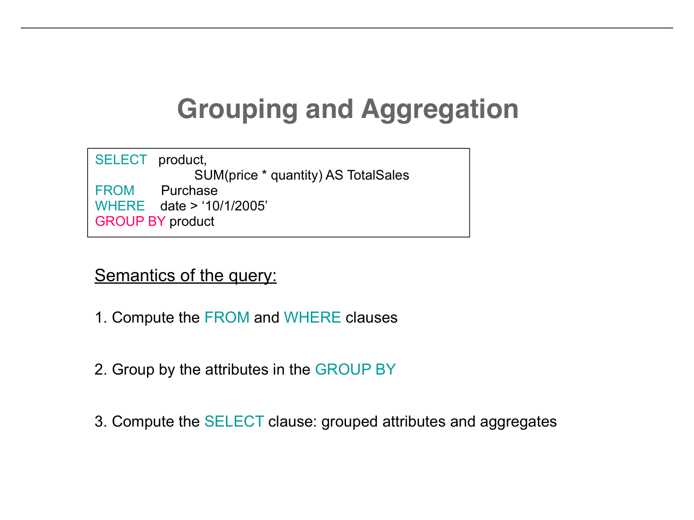
Next, the intermediate rows are partitioned into groups. All rows with the same value(s) for the GROUP BY column(s) are placed together. If you write GROUP BY Manufacturer, all GizmoWorks products go in one group, all Canon products in another, and so on. Each group will produce exactly one row in the final output.

Finally, for each group, evaluate the SELECT clause. You may include the GROUP BY columns (which are the same for every row in the group) and aggregate functions (which summarize the group). Any column in the SELECT that is not inside an aggregate function must appear in the GROUP BY clause. This rule exists because each group collapses into a single output row, and non-aggregated columns must have a single well-defined value.
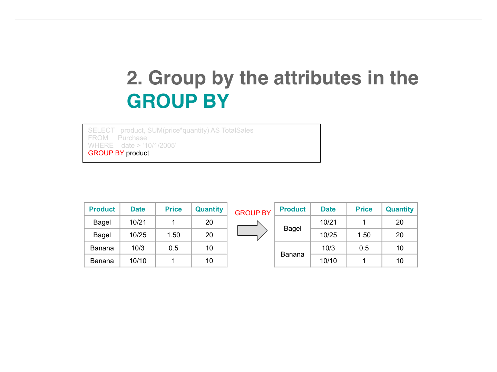
HAVING: Filtering Groups
What if we want to find only manufacturers whose average product price exceeds $20? We cannot put this condition in the WHERE clause, because WHERE filters individual rows before grouping. We need a way to filter after grouping, based on aggregate values. That is what HAVING does.

WHERE
Filters individual tuples before grouping. Conditions reference column values of single rows. Example: WHERE Price > 10 removes rows with Price ≤ 10 before any grouping occurs.
HAVING
Filters entire groups after grouping. Conditions reference aggregate values. Example: HAVING AVG(Price) > 20 removes groups whose average price is $20 or less.
Execution Order
The full execution order for a query with all clauses is:
FROM— identify the source tablesWHERE— filter individual rowsGROUP BY— partition remaining rows into groupsHAVING— filter groups based on aggregate conditionsSELECT— compute the output columnsORDER BY— sort the final result
Even though SQL is written in the order SELECT-FROM-WHERE-GROUP BY-HAVING-ORDER BY, it is executed in a different order. This is a common source of confusion for beginners.
Inner Joins and Outer Joins
Now let us revisit joins with more precise terminology and introduce a critical new concept: outer joins. The joins we have seen so far are technically called inner joins, and they have a significant limitation that outer joins address.
Two Equivalent Inner Join Syntaxes
SQL provides two ways to write an inner join that produce identical results. Understanding both is important because you will encounter each in practice.
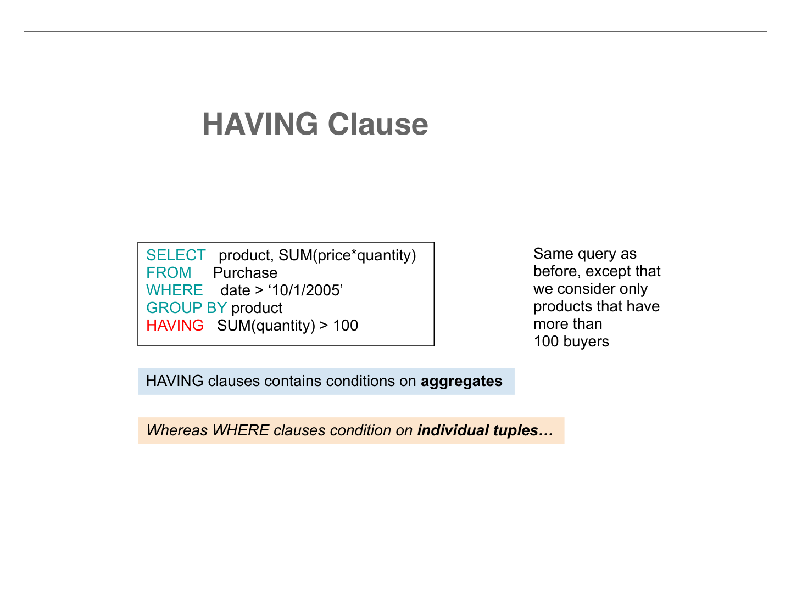
Implicit Join (WHERE style)
SELECT * FROM Product, Purchase WHERE Product.name = Purchase.prodName
The older, comma-separated syntax. Tables are listed in FROM, and the join condition goes in the WHERE clause alongside any filter conditions.
Explicit Join (JOIN...ON style)
SELECT * FROM Product JOIN Purchase ON Product.name = Purchase.prodName
The modern, preferred syntax. The join condition is separated into the ON clause, making it visually distinct from filter conditions that go in WHERE.
Both produce exactly the same result. The explicit JOIN...ON syntax is generally preferred because it separates the join logic (how tables relate) from the filter logic (which rows to keep), making queries easier to read and debug.
The Inner Join Problem: Missing Data
Consider two tables: Product(name, category) and Purchase(prodName, store). Suppose our Product table includes a "Ford Pinto" that nobody has ever purchased. An inner join between Product and Purchase will exclude the Ford Pinto entirely, because there is no matching row in Purchase for it to pair with.

The Missing Rows Problem
Sometimes we want to see products even if they have no purchases. Perhaps we are generating a report of all products with their sales data, and products with zero sales are important information — they might need to be discontinued or promoted. Inner joins silently drop these rows, which can lead to misleading results if you are not careful.
Outer Joins to the Rescue
Outer joins solve the missing rows problem by guaranteeing that every row from one or both tables appears in the result, even if there is no match in the other table. When no match exists, the missing columns are filled with NULL.
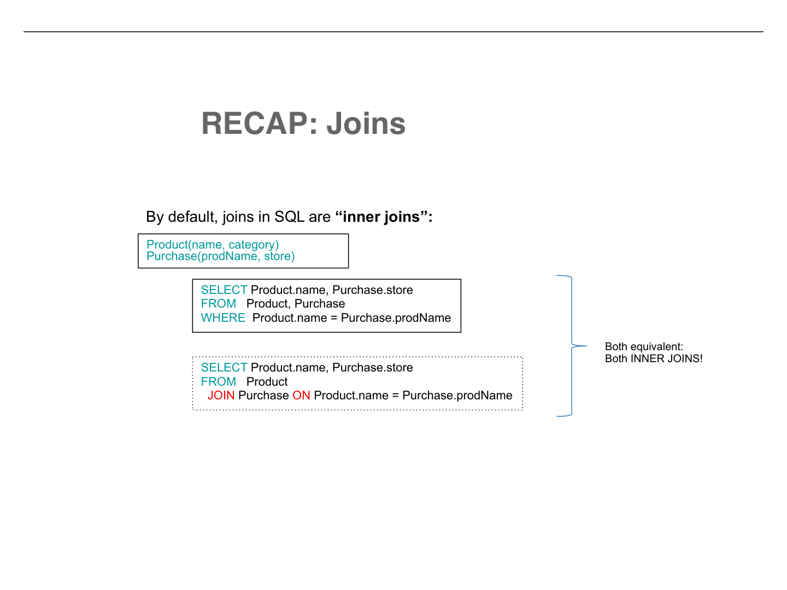
LEFT OUTER JOIN
A LEFT OUTER JOIN keeps all rows from the left table (the one listed first). If a left row has no match in the right table, the right-side columns are padded with NULL.

LEFT OUTER JOIN Example
SELECT * FROM Product LEFT OUTER JOIN Purchase ON Product.name = Purchase.prodName
In this result, every product appears at least once. The Ford Pinto, which has no purchases, shows up as (Ford Pinto, car, NULL, NULL). The NULL values fill in for the missing prodName and store columns from the Purchase table. Products that do have purchases appear normally, possibly multiple times if they have multiple purchases.
RIGHT OUTER JOIN and FULL OUTER JOIN
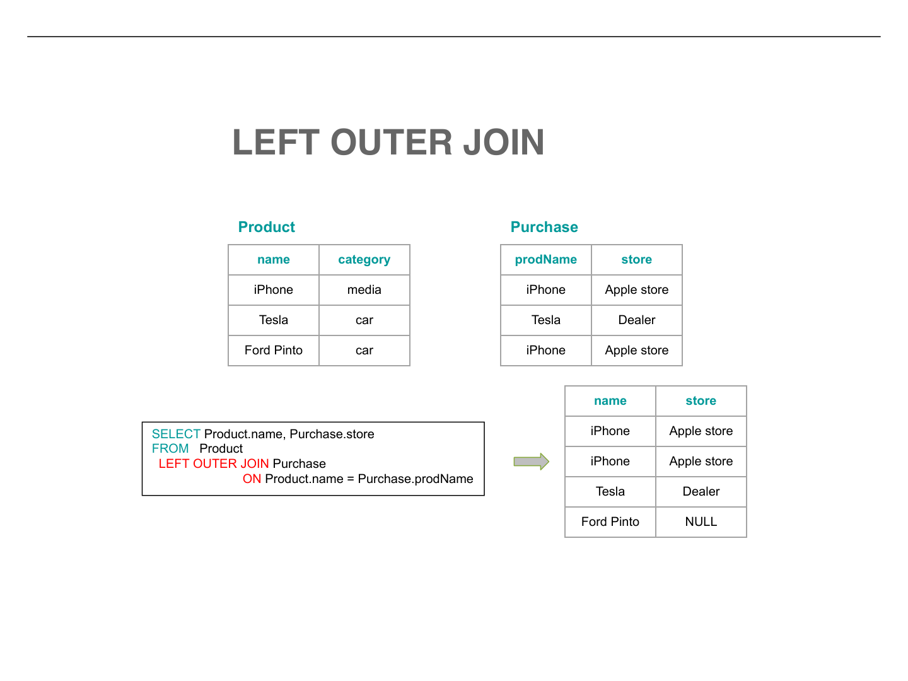
The Three Types of Outer Joins
- LEFT OUTER JOIN: All rows from the left table are preserved. Unmatched right-side columns become NULL.
- RIGHT OUTER JOIN: All rows from the right table are preserved. Unmatched left-side columns become NULL. This is the mirror image of LEFT OUTER JOIN — you can always rewrite a RIGHT join as a LEFT join by swapping the table order.
- FULL OUTER JOIN: All rows from both tables are preserved. If a row from either table has no match, the other side is padded with NULL. This gives you the most complete picture but also the largest result set.
Join Output Sizes
Understanding the possible size of a join result is important for reasoning about query performance and correctness. Given a left table with L rows and a right table with R rows, the minimum and maximum output sizes vary by join type.
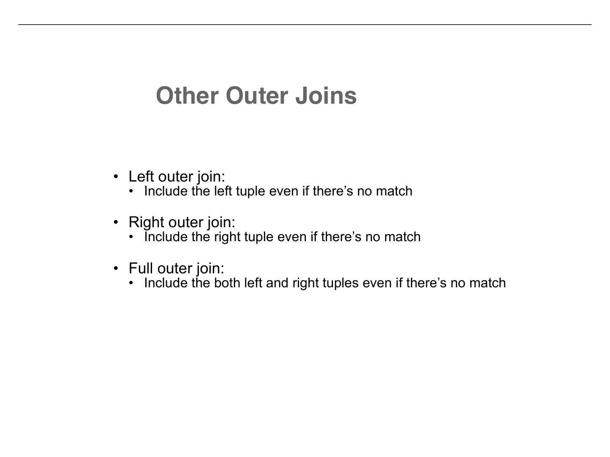
| Join Type | Minimum Output Rows | Maximum Output Rows |
|---|---|---|
| Inner Join | 0 | L × R |
| Left Outer Join | L | L × R |
| Right Outer Join | R | L × R |
| Full Outer Join | L + R | L × R |
Understanding the Bounds
Inner join minimum is 0: If no rows match the join condition, the result is empty. Think of joining a table of cat owners with a table of dog breeds — if the join condition requires matching on pet name and no cat shares a name with a dog breed, you get nothing.
Left outer join minimum is L: Every left row appears at least once (with NULL padding if needed), so you are guaranteed at least L output rows. This is exactly why left outer joins are useful — they guarantee representation.
Full outer join minimum is L + R: In the worst case where no rows match at all, every left row appears once (padded with NULLs on the right) and every right row appears once (padded with NULLs on the left). However, if there are matches, the output could be smaller than L + R because matched rows are combined rather than appearing separately. The minimum of L + R occurs when zero rows match.
Maximum is always L × R: This occurs when every row in the left table matches every row in the right table (for example, if the join condition is always true, or if every value in the join column is the same on both sides). In practice, this is rare and usually indicates a missing or incorrect join condition.
Key Takeaways
- ✓ Foreign keys enforce referential integrity: a value in one table must reference an existing value in another table. They are declared with
FOREIGN KEY ... REFERENCESand offer three policies for handling deletions: RESTRICT, CASCADE, and SET NULL. - ✓ Joins combine data from multiple tables. The logical model involves a cross product followed by selection and projection, though the database optimizer uses far more efficient strategies internally.
- ✓ Aggregation functions (SUM, COUNT, MIN, MAX, AVG) summarize data.
GROUP BYpartitions rows into groups for per-group aggregation, andHAVINGfilters groups based on aggregate conditions. - ✓ Inner joins only return rows with matches in both tables. Outer joins (LEFT, RIGHT, FULL) preserve unmatched rows by padding with NULLs, which is essential when absence of data is itself meaningful information.
- ✓ WHERE vs. HAVING: WHERE filters individual rows before grouping; HAVING filters groups after aggregation. They operate at different stages of query execution.
- ✓ Real-world trade-offs: Foreign keys add safety but cost performance at scale. Normalized tables reduce redundancy but require joins. Understanding these trade-offs is what separates textbook knowledge from practical database design.